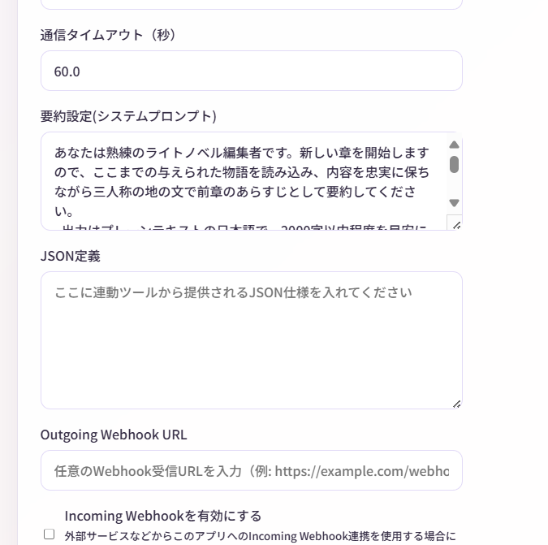

JSON連動機能
JSON連動機能は、物語内にプログラムが読み取れるデータを埋め込み、外部ツールと連携する上級者向けの機能です。
非常に高度な機能
この機能は、以下の知識が必要です：
- JSON形式の理解
- プログラミング経験
- Webhook連携の知識
初心者の方は、まず基本機能をマスターしてください。
安全性に関する注意
外部ツールや外部機器の制御を伴うため、安全性に十分注意してください。
- 信頼できるツールのみ使用してください。
- 熱源や感電などの危険がある機器は特に注意してください。
- 万が一の誤動作に備え、緊急停止手段を用意してください。
JSON連動とは？
通常、物語は人間が読むためのテキストですが、JSON連動機能を使うと、プログラムが理解できるデータも一緒に生成できます。
例：照明制御
<narration>部屋が暗くなった。</narration>
<json>{"device": "light", "color": "blue", "brightness": 30}</json>
この<json>タグ内のデータを外部プログラムが読み取り、実際にスマートライトを青く暗くできます。
基本的な使い方
ステップ1: JSON定義を設定
- 上部メニューから 「設定」
- 「JSON定義」 欄に、生成してほしいJSONの仕様を記述
例（照明制御）：
このJSONは、スマートライトを制御するために使用されます。
フィールド：
- device: 常に "light" を指定
- color: ライトの色（"red", "blue", "green", "white", "yellow"）
- brightness: 明るさ（0〜100の整数）
例：
{"device": "light", "color": "red", "brightness": 80}
{"device": "light", "color": "blue", "brightness": 30}

ステップ2: 物語を生成
AIが物語を生成する際、アニメーションに合わせて、適切なタイミングでJSONも一緒に生成します。
生成例：
<narration>太陽が沈み、部屋が暗くなった。</narration>
<json>{"device": "light", "color": "blue", "brightness": 30}</json>
<dialogue name="アリス">夜になったね。ライトをつけようか。</dialogue>
<json>{"device": "light", "color": "white", "brightness": 80}</json>
ステップ3: JSONを外部ツールに送信
Outgoing Webhookを設定しておけば、JSONが自動的に外部ツールに送信されます。
※キャラクター発言、地の文なども同様に外部送信されます。
送信されるデータ：
{
"type": "json",
"name": null,
"content": "{\"device\": \"light\", \"color\": \"blue\", \"brightness\": 30}",
"createdAt": "2025-01-01T12:00:00Z",
"storyId": "story-abc123"
}
送信はアニメーション再生時に毎回行われます
- 送信は、物語生成と、メニューからの手動アニメーション再生の両方で行われます。
- 一通り生成し終わってから、Outgoing Webhookを設定してアニメーションを再生することでも送信されます。
JSON定義の書き方
良い定義の例
例1: 音楽再生
このJSONは、BGM再生を制御します。
フィールド：
- action: "play" または "stop"
- track: 曲名（"battle", "peaceful", "dramatic", "sad"）
- volume: 音量（0〜100）
例：
{"action": "play", "track": "battle", "volume": 70}
{"action": "stop"}
例2: キャラクターの感情
このJSONは、キャラクターの感情状態を表します。
フィールド：
- character: キャラクター名
- emotion: 感情（"happy", "sad", "angry", "surprised", "neutral"）
- intensity: 強度（1〜10）
例：
{"character": "アリス", "emotion": "happy", "intensity": 8}
{"character": "ボブ", "emotion": "angry", "intensity": 5}
例3: ゲーム変数
このJSONは、ゲームの内部変数を管理します。
フィールド：
- variable: 変数名
- value: 値（数値または文字列）
- operation: "set", "add", "subtract"
例：
{"variable": "hp", "value": 10, "operation": "subtract"}
{"variable": "score", "value": 100, "operation": "add"}
{"variable": "location", "value": "forest", "operation": "set"}
定義のコツ
- 具体例を複数書く - AIが理解しやすくなる
- フィールドを明確に - 何を意味するか説明
- 値の範囲を指定 - 0〜100など
- 使用場面を説明 - いつ使うかAIに伝える
外部ツールの作成例
Python + スマートライト
以下のコードは例示です。動作確認をしていません。
実際に使用する場合は、セキュリティやエラーハンドリングを十分に考慮してください。
from flask import Flask, request
import requests
app = Flask(__name__)
@app.route('/webhook', methods=['POST'])
def webhook():
data = request.json
# JSONエントリのみ処理
if data.get('type') == 'json':
import json
content = json.loads(data.get('content', '{}'))
# スマートライト制御
if content.get('device') == 'light':
color = content.get('color')
brightness = content.get('brightness')
# ここで実際のライトを制御
control_smart_light(color, brightness)
print(f"ライトを {color} に設定、明るさ {brightness}")
return {"status": "ok"}
def control_smart_light(color, brightness):
# 実際のスマートライトAPIを呼び出す
# 例: Philips Hue, LIFX など
pass
if __name__ == '__main__':
app.run(port=5000)
Narrative Conversationの設定で、Webhook URLを http://127.0.0.1:5000/webhook に設定します。
使用例
例1: BGM制御システム
JSON定義：
BGM再生を制御します。
- action: "play" または "stop"
- track: "battle", "peaceful", "dramatic", "sad"
- volume: 0〜100
物語：
<narration>突然、敵が現れた！</narration>
<json>{"action": "play", "track": "battle", "volume": 80}</json>
<dialogue name="アリス">来た！</dialogue>
外部ツール: 音楽プレイヤーがバトルBGMを再生
例2: ゲーム連動
JSON定義：
物語：
<action name="ボブ">剣で敵を斬りつけた</action>
<json>{"event": "damage", "value": 50, "target": "敵"}</json>
<narration>敵のHPが50減少した。</narration>
外部ツール: ゲームエンジンが敵のHPを減らす
例3: VTuber配信連動
JSON定義：
VTuberの表情を制御します。
- expression: "smile", "sad", "angry", "surprised", "neutral"
- duration: 表情の持続時間（秒）
物語：
外部ツール: Live2Dモデルが笑顔になる
注意事項
JSONは物語の一部
- JSONエントリも物語のタイムラインに含まれ、表示されます。
- エクスポート時、XMLには含まれます。テキストには含まれません。
AIの生成精度
AIが必ずしも完璧なJSONを生成するとは限りません。
- 外部ツール側でエラーハンドリングを行う
- JSON定義を具体的に書く
- 生成後に手動で修正することも可能
パフォーマンス
JSONを頻繁に生成すると、トークン消費が増えます。
- 必要最小限にする
- 重要な場面でのみ使用
トラブルシューティング
AIがJSONを生成しない
対処法：
- JSON定義を見直す（具体例を増やす）
- 司令で明示的に指示（「適切なタイミングでJSONを生成してください」）
- システムプロンプトに追記（「JSON連動を積極的に使ってください」）
JSONの形式が正しくない
対処法：
- 外部ツール側でJSONパースエラーをキャッチ
- 無効なJSONは無視する
- エントリを手動で修正
外部ツールが反応しない
対処法：
- Outgoing Webhookが設定されているか確認
- 外部ツールが起動しているか確認
- ネットワーク接続を確認
- ログを確認（外部ツール側、サーバー側）
よくある質問
Q. JSON定義は必須ですか？
A. いいえ、オプションです。
JSON連動を使わなくても、Narrative Conversationは使えます。
Q. 複数のJSON定義を設定できますか？
A. 1つの定義内に、複数の用途を含めることは可能です。
【ライト制御】
{"device": "light", "color": "red", "brightness": 80}
【音楽制御】
{"device": "music", "action": "play", "track": "battle"}
Q. JSONを手動で追加できますか？
A. はい、エントリタイプで「JSON」を選択して追加できます。
まとめ
JSON連動機能を使えば：
- 物語と外部システムを連動
- スマートホーム、ゲーム、VTuberなどと連携
- 物語がインタラクティブに
高度な機能ですが、創造性を大きく広げる可能性を秘めています！